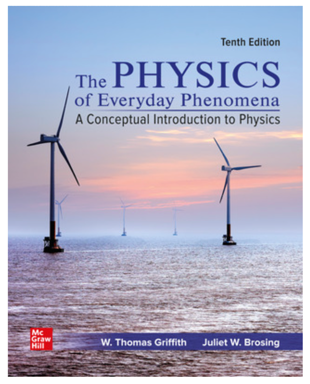
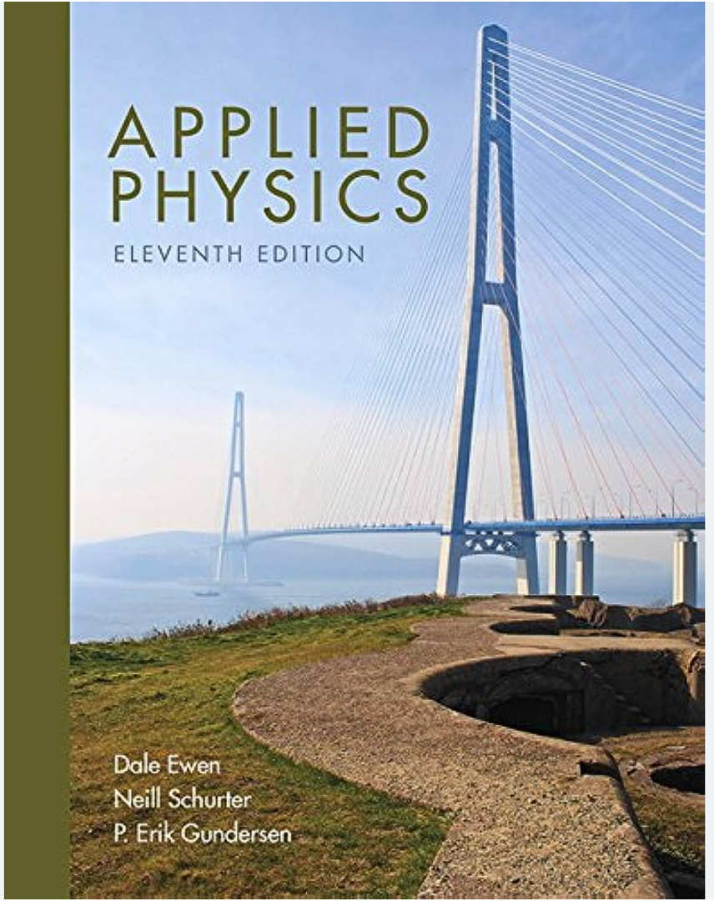
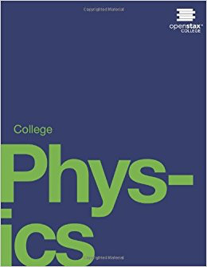
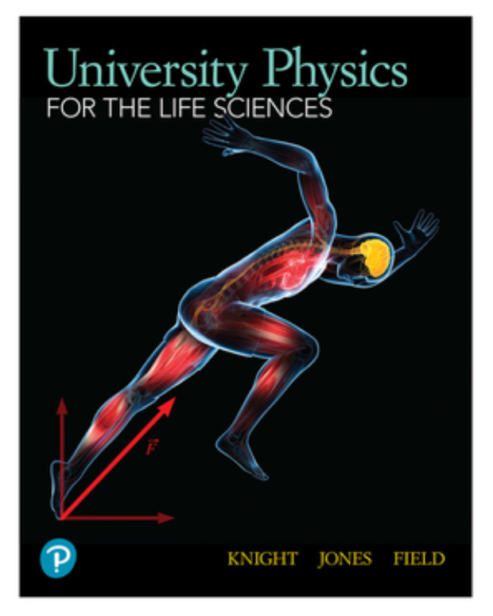
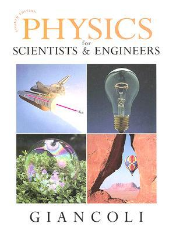

Students

Are you taking the correct physics course?
When comparing requirements, never focus your attention only on the name of a course: don't trust names, there is no uniformity on how courses are labeled. "College Physics" can mean different things for different institutions. Instead, pay attention to the detailed description that explains the pre- and co-requisites, and most importantly, the list of topics covered.
Also, never go by the number of courses required: different institutions split physics coverage in different ways. Some courses can be much more demanding and fast-paced than others, and it is difficult to compare just by looking at superficial information. Again, instead, pay attention to the detailed description, pre/co-requisites and list of topics covered. At SCCC, for example, our calculus-based physics sequence takes 3 semesters (6 courses in total, lecture+lab).
Ultimately, the physics course(s) you take depends on what you want to do in the future:
- Aspiring ultrasound technicians, radiology technicians, occupational therapists: PHY103 should be the course for you at SCCC (only basic algebra is required). Most programs in these areas have accepted PHY103 in the past, but you need to call or e-mail the institution you want to transfer to, and confirm officially that PHY103 will be accepted. E-mail might be better, as you will have official proof of their reply. Checking ahead that this is the right course for your career goal is
your responsibility . - Aspiring physical therapists: the sequence of courses PHY118 and PHY119 should be appropriate for you at SCCC (2 semesters). This is intermediate algebra and trigonometry-based physics (only pre-calculus is required), and it is generally accepted for non-science majors (notice this is more mathematically demanding than PHY103, and has a different emphasis and coverage than PHY103). Most non-science major programs have accepted PHY118/119 in the past, but you need to call or e-mail the institution you want to transfer to, and confirm officially that PHY118/119 will be accepted.
- All majors in the life sciences (biology, environmental sciences/forestry): the general rule is that you need the 2-semester sequence of calculus-based physics at SCCC : PHY121, PHY122.
- All majors in: engineering, computer science, math, physical sciences: the general rule is that you need the 3-semester sequence of calculus-based physics at SCCC: PHY130+PHY132, PHY220+222, PHY230+PHY232. Sometimes there are exceptions: some science programs might accept PHY118/119, but it is your responsibility to check. ATTENTION: once you start taking the calculus-based sequence at SCCC, you should avoid transferring until you complete all 3 semesters. Transferring after only 1 or 2 semesters will most likely result in missing a full semester of physics at the institution you are going to (a waste of your time and money). Only the full package of 3 semesters transfers seamlessly. This is because different institutions split the coverage of topics in different ways. Only after 3-semesters we are all the same.
Physics Courses at SCCC
Please read the section: "Are you taking the correct physics course?"
Click on the courses below to read the general syllabus. The general syllabus contains information about the pre- and co-requisites, the Learning Outcomes, and sometimes other general information too. However, each instructor writes a specific Course Outline with detailed guidelines every semester. The Course Outline will contain information about textbook requirements, grade policy, etc. Students should check with their instructors for the Course Outline at the start of the semester.
PHY118+PHY119 mirror the level of AP Physics 1 and 2.
PHY130+132, PHY220+222, PHY230+232 mirror the level of AP Physics C Mechanics and Electromagnetism.
| Course | Title | Math level | Lecture, Lab | Cr | Fall | Spring | Summer | Textbook |
|---|---|---|---|---|---|---|---|---|
| PHY103 | Technical Physics for Health Careers | basic algebra | lecture+lab | 4 | Y | Y | N | * and  |
| PHY105 | Technical Physics | basic algebra | lecture+lab | 4 | Y† | Y† | N | * and  |
| PHY118 | College Physics I | intermediate algebra and trigonometry | lecture+lab | 4 | Y | Y | Y | * and  |
| PHY119 | College Physics II | intermediate algebra and trigonometry | lecture+lab | 4 | Y† | N | Y | * and |
| PHY121 | Physics for the Life Sciences I | calculus | lecture+lab | 4 | Y | Y | Y | * and  |
| PHY122 | Physics for the Life Sciences II | calculus | lecture+lab | 4 | Y | Y | Y | * and |
| PHY130 | Physics A | calculus | lecture | 3 | Y | Y | Y |  |
| PHY132 | Physics A Lab | calculus | lab | 1 | Y | Y | Y | email the instructor |
| PHY220 | Physics B | calculus | lecture | 3 | Y | Y | Y | |
| PHY222 | Physics B Lab | calculus | lab | 1 | Y | Y | Y | email the instructor |
| PHY230 | Physics C | calculus | lecture | 3 | Y | Y | N | |
| PHY232 | Physics C Lab | calculus | lab | 1 | Y | Y | N | email the instructor |
| PHY247 | Modern Physics | calculus | lecture | 3 | Y | Y | N | |
| PHY248 | Modern Physics Lab | calculus | lab | 1 | Y | Y | N | email gianels AT sunysufolk.edu |
| * For these cases, always consult your instructor before you purchase any textbook. | ||||||||
| † Subject to having more than 10 students enrolled. | ||||||||
Required for STEM majors (except Life Sciences) in calculus-based physics classes:
ISBN-13: 978-0132275590
Physics for Scientists and Engineers, 4/E by Doug Giancoli
Publisher: Addison-Wesley
Chapters 1 to 37; without Modern Physics.
PHY130: Chaps: 1-13
PHY230: Chaps: 21-30.4
PHY245: Chaps: 14-20, 30-35
Buy where is cheapest: search!
ISBN-13: 978-0132275590
Physics for Scientists and Engineers, 4/E by Doug Giancoli
Publisher: Addison-Wesley
Chapters 1 to 37; without Modern Physics.
PHY130: Chaps: 1-13
PHY230: Chaps: 21-30.4
PHY245: Chaps: 14-20, 30-35
Buy where is cheapest: search!
For several intermediate-algebra physics classes (consult instructor!):
The digital version of this book is FREE. The paper copy costs about $50.
The website to access this book and its resources is: https://openstax.org/details/college-physics
Other important links:
Student Solution Manual
Answers to end-of-chapter problems
The digital version of this book is FREE. The paper copy costs about $50.
The website to access this book and its resources is: https://openstax.org/details/college-physics
Other important links:
Student Solution Manual
Answers to end-of-chapter problems
Required for Life Science majors in calculus-based physics classes (PHY121, 122):
ISBN-13: 978-0135822180
University Physics for the Life Sciences, 1/E by Knight, Jones, Field
Publisher: Pearson
PHY121: Chaps: 1-14
PHY122: Chaps: 15-30
Textbook+homework package often required together (consult instructor)
ISBN-13: 978-0135822180
University Physics for the Life Sciences, 1/E by Knight, Jones, Field
Publisher: Pearson
PHY121: Chaps: 1-14
PHY122: Chaps: 15-30
Textbook+homework package often required together (consult instructor)
Required for some algebra-based classes (mainly PHY105, but consult instructor!):
ISBN-13: 978-0134159386
Applied Physics, 11/E by Ewen, Schurter, Gundersen
Publisher: Pearson
Textbook+homework package often required together (consult instructor)
ISBN-13: 978-0134159386
Applied Physics, 11/E by Ewen, Schurter, Gundersen
Publisher: Pearson
Textbook+homework package often required together (consult instructor)
Required for some algebra-based classes (mainly PHY103, but consult instructor!):
ISBN: 978-1264121212
The Physics of the Everyday Phenomena, 10/E by Griffith, Brosing
Publisher: McGraw Hill
Textbook+homework package often required together (consult instructor)
ISBN: 978-1264121212
The Physics of the Everyday Phenomena, 10/E by Griffith, Brosing
Publisher: McGraw Hill
Textbook+homework package often required together (consult instructor)
List of scholarship and internship opportunities
SCCC STEM scholarship
This is one of the best opportunities at the college. Being a STEM scholar looks very good in your cv, and it is likely to increase your chances of acceptance in internships and transfer to 4-year institutions.
SCCC scholarship & award opportunities
This is a search engine for many scholarships offered at SCCC. Some are the big scholarships (several thousand dollars), for example SOLII, and the math department "Dr. Robert Frey Family Foundation" scholarship. But most of the scholarships listed award $100-500, and very few students typically apply, sometimes none! So you can imagine your chances of getting some of these are high. Apply to all that you are eligible for!
http://www.sunysuffolk.edu/Prospects/Scholarships.aspResearch Experience for Undergraduates (REU)
These are highly competitive, but here is the bright side: they often have a quota for community college students, and once you get one of these, your cv is in really good shape for the foreseeable future. Students typically send applications to 10 places or more, and perhaps hear back positively from only one: that's the ratio, in general. Therefore, apply to many! Deadlines are typically by January, therefore start requesting recommendation letters by November.
https://www.nsf.gov/crssprgm/reu/reu_search.jspNASA Community College Aerospace Scholars
https://www.nasa.gov/stem/murep/projects/ncas.htmlSociety of Physics Students (SPS) internships
This is for astronomy-interested students too. Learn this: everytime you hear something physics-related, it can branch out to many different disciplines! Physics is applicable to so many areas, it will always be an asset in your curriculum.
https://www.spsnational.org/programs/internshipsBNL internships
First try the CCI, which can be applied to other labs across the country, not just BNL. Your chances of getting the CCI are higher if you are already a STEM scholar at SCCC (see opportunity above). In case you are not eligible to be a STEM scholar, I have seen some students apply to the mini-semester program at BNL first (during the winter break), in order to increase their chances of getting the more competitive CCI in the summer: that's smart. After you've done a CCI, then you can apply for a SULI. Deadlines are typically by January, therefore start requesting recommendation letters by November.
https://www.bnl.gov/education/college-students.phpThere is more out there: search, ask, show interest
Astronomy majors, check this out.
Search about career paths as well: expand your horizon about physics career paths by reading more here.
Help Center
Free tutoring is available in room T-210 (2nd floor of Smithtown Science bldg, SMITHSC) according to the schedule posted at the door of T-210. You can also ask your instructor for a link to the schedule. Send comments to pappasm AT sunysuffolk.edu.
Why take physics?
Physics is about explaining the laws of nature. It opens your mind to a different way to thinking and solving problems from the root up, based on principles and laws, adapting to the different scenarios as you go, without relying much on memorization. This technique can be applied to many jobs and areas of life. Physics will give you "eureka!" moments, when you finally understand something you never fully understood before. It is highly valued by employers, and it has so many applications...but do not register to a physics course unless you are willing & able to spend many hours practicing it. Practice and dedication is what it takes, there's no mystery. The internal brain process is like learning a new language, or learning how to swim: you cannot do it just by looking at a book, and it will require time to get good at it. Click on the links below to learn more.
{kind=link}
The real story about employment for physics graduates, by Crystal Bailey (APS)
Why study physics? (SPS)
In case this is your path: Planning for Graduate Studies in Physics and Related Fields
What does it take to succeed in physics?
Different from many other courses, physics is not about memorization. Every problem is different, and so you must adapt every time. We will teach you tools to solve problems, but every problem will ask you to use these tools differently. We will practice together in class, but that is not enough. You will need to practice a lot more (3 times more than the time spent in class, per week) on your own. The internal brain process is like learning a new language, or learning how to swim: you cannot do it just by looking at a book or how a professor solved something, you must try it yourself, several times, in different ways. It will require time to get good at it. Do not register to a physics course unless you are willing & able to spend many hours practicing it.
Check out this manual on "how to succeed in physics" by OpenStax.
Advice for students who REALLY want to succeed in college and beyond.
Do not compare yourself to students near you: the environment outside SCCC is more competitive than inside SCCC, and you will need to establish higher standards for yourself. Take charge of your own academic path, do not wait for counselors/advisors to tell you what courses you need to take: investigate on your own, search for information online, study the sample schedule of the institution you plan to transfer to. For example, you can find sample schedules from Stony Brook university
You are always going to need recommendation letters.
When requesting a recommendation letter, get in touch with the faculty member well ahead of the deadline (MORE THAN 2 WEEKS NOTICE, PREFERABLY A MONTH OR MORE). Only request recommendation letters from faculty members that have something really positive to say about you (something that distinguishes you from others). In the e-mail you send to the faculty member requesting the letter, remember to
Physics Major - your suggessted schedule at SCCC (click)
Link to science programs at SCCC: https://www.sunysuffolk.edu/explore-academics/majors-and-programs/science/Disclaimer: Any opinions, findings, conclusions or recomendations expressed in this website are those of the author and do not necessarily reflect the views of Suffolk County Community College.
Icons made by Freepik from www.flaticon.com are licensed by CC 3.0 BY; other icons are by fontawesome.com.
Html template by pixelarity.com